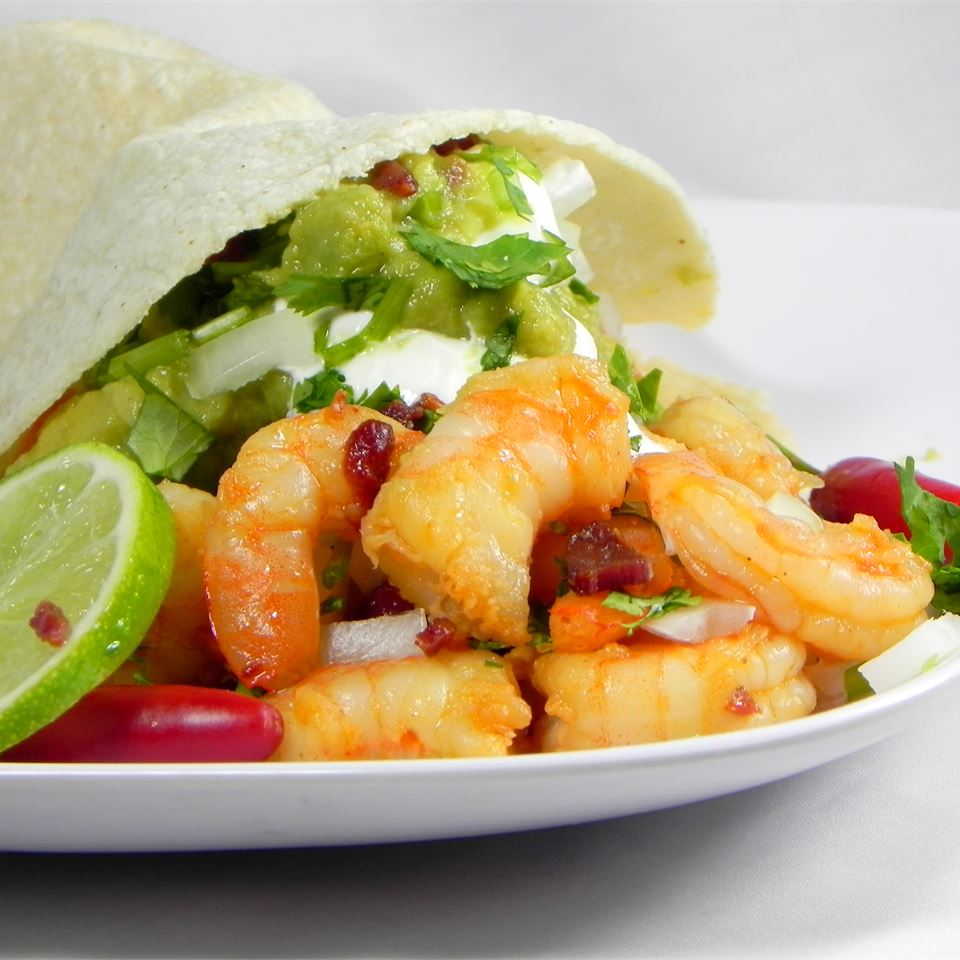

Chipotle Shrimp Tacos

Description
Warm corn tortillas filled with spicy chipotle shrimp and garnished with cilantro, onion, and lime.
Ingredients:
- 1 (12 ounce) package bacon, cut into small pieces
- ½ onion, diced
- 2 pounds large cooked shrimp - peeled, deveined, and cut in half
- 3 chipotle peppers in adobo sauce, minced
- 12 corn tortillas
- 1 cup chopped fresh cilantro
- 1 lime, juiced
- 1 pinch salt to taste
Steps:
- In a large, deep skillet fry the bacon over medium-high heat until evenly brown. Drain the bacon fat. Add the onions to the pan with the bacon and cook 5 minutes or until the onions are translucent. Stir in the shrimp and chipotle chiles; cook 4 minutes or until heated through.
- Heat tortillas on an ungreased skillet over medium-high heat for 10 to 15 seconds. Turn and heat for another 5 to 10 seconds. Fill the heated tortillas with shrimp mixture. Sprinkle with cilantro, lime juice, and salt.